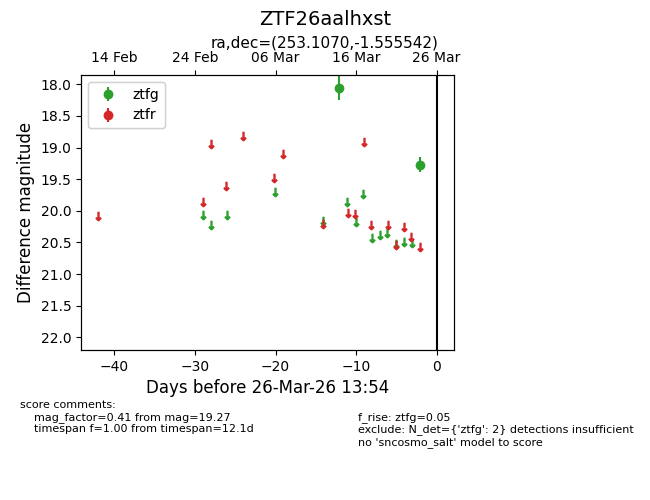
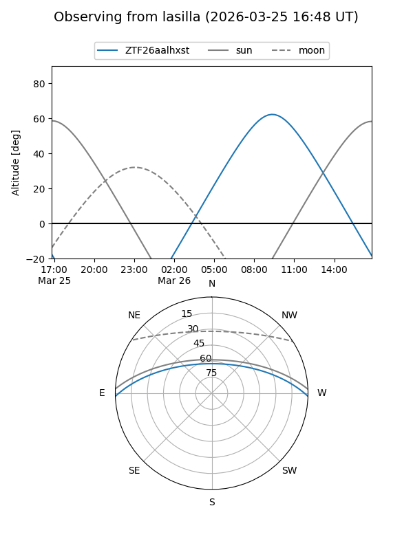
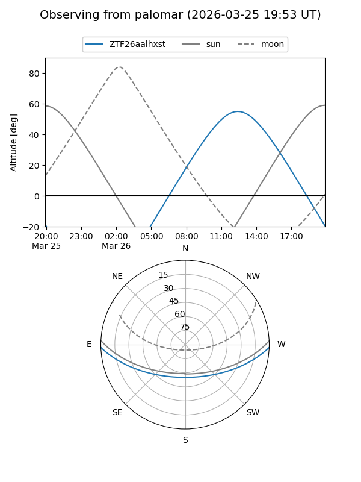

ZTF26aalhxst
Target ZTF26aalhxst at 2026-03-26 13:56
Aliases and brokers:
FINK: link
Lasair: link
ALeRCE: link
alt names
ZTF26aalhxst (ztf,fink_ztf)
Coordinates:
equatorial (ra, dec) = 253.1070,-1.55554
equatorial (HMS+DMS) = 16:52:25.67,-01:33:19.95
galactic (l, b) = (16.8401,+25.41171)
Flags:
Photometry:
last ztfg=19.27
2 ztfg detections
Lightcurve

Visibility


Additional plots